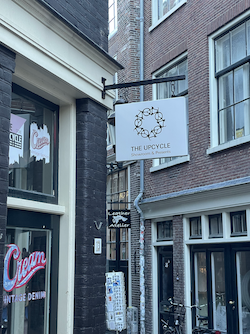

Wat is upcycling?
Upcyclen is eigenlijk het creatief hergebruiken van oude spullen. Je neemt iets dat je niet meer gebruikt, zoals een oude trui of een lege fles, en maakt er iets nieuws en beters van. Bijvoorbeeld, van een oude trui kun je een leuke tas maken, of van een lege fles een mooie vaas. Het is een leuke en milieuvriendelijke manier om afval te verminderen en nieuwe dingen te maken.
Upcycled products

The upcycle
Een bedrijf dat hierin specialiseerd is The upcycle in Amsterdam, naast tweedehands kleding verkopen ze ook deze upcycled producten en geven ze workshops voor het maken van deze producten.